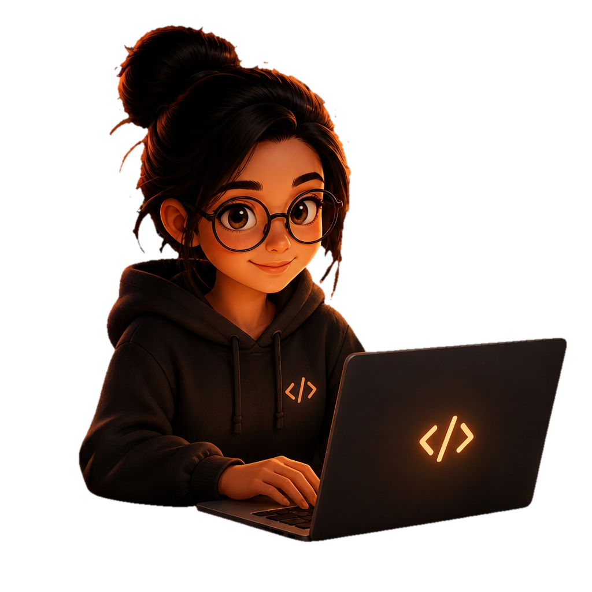

01 / MACHINE LEARNING
Small signals.
Human patterns.
HAR Router
Recognizing human activities from smartphone accelerometer and gyroscope data.
A CURIOUS MIND, IN MOTION.
A curious mind. A thoughtful builder.
I'm Keerthika, a CSE student exploring AI & ML.
Learning one question, one project, one idea at a time.
01 / BEHIND THE SCREEN
I like taking an idea apart, understanding the pieces, and building something useful.
I'm exploring software and AI through projects, from a mobile learning app to recognizing activity in sensor data. When something doesn't make sense, I go back, ask questions, and try again.
The goal? Become an AI engineer who makes technology useful and approachable.
A few tools I’m learning with ↘
ALWAYSBengaluru, India
02 / HOW THE PIECES CONNECT
I’m learning to connect what people see, how a system works, and what the data can tell us.
Exploring interfaces that help people find their way, on the web and in their pocket.
DIFFERENT LAYERS. ONE CURIOUS MIND.
03 / SELECTED EXPERIMENTS
A few ideas I’ve taken
from a question to a working project.
04 / THE PART THAT NEVER STOPS
Less of a straight line.
More of a series of good questions.
Exploring web development and how people interact with a product.
Connecting interfaces to APIs, backend systems, and data.
Working with Python and activity recognition through HAR Router.
Building, revisiting the foundations, and following the next question.
05 / THE NEXT CONVERSATION
A project, a question, or an idea worth exploring.
I'd love to hear about it.